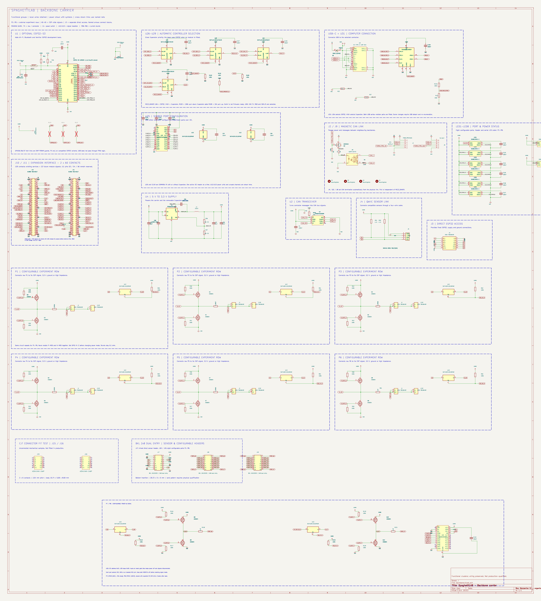
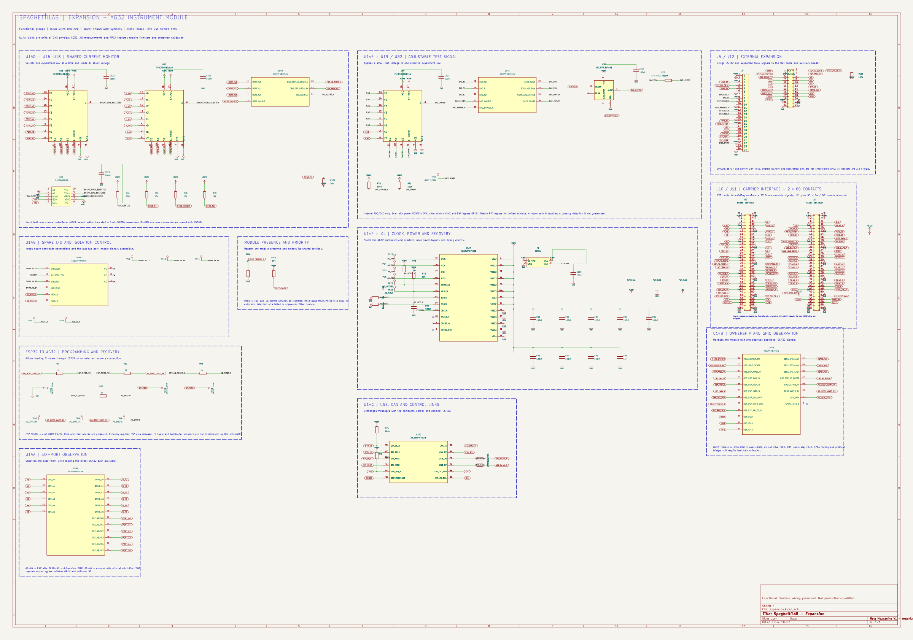

Carrier:17blocks. Expansion:11blocks. English descriptions, local wires, power symbols.
All109resistors/capacitors are0603.25package substitutions,968pin/net associations unchanged. ERC:0errors;no new DRCfindings. Previous11RGBcourtyard overlaps resolved. Layout/routing qualification remains open.

